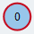
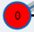
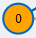
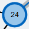

Največje prirejanje v splošnih grafih
Maximum matching in a general graph.
Edges contained in the matching are colored blue.
Prirejanje M je podmnožica povezav, tako da je vsak vozel s tako povezavo pokrit največ 1x.

Spremeni graf
- Za ustvarjanje vozla dvoklikni na risalno površino.
- Za ustvarjanje povezave klikni izhodno vozlišče in nato še vhodno vozlišče
- Desni klik zbriše vozlišča in povezave
Shrani graf:
ShraniNaloži graf:
Legenda
| rumena: prosto vozlišče | |
|  | rdeča obroba: koren BFS |
|  | rdeča: trenutno aktivno vozlišče v BFS |
|  | oranžna: trenutni pregledani sosed v BFS |
| zelena: vozel na povečujoči poti | |
|  | večji premer: stisnjen vozel |
| oranžna: trenutna povezava v BFS | |
| modra: povezava v prirejanju | |
| siva prevleka: povezava v BFS drevesu | |
| zelena prevleka: povezava na povečujoči poti |
Legend
Status algoritma
Edmonds Blossom Algoritem
Klikni "naprej" za izvedbo koraka algoritma, "nazaj" za prejšni korak in hitro naprej za hitro izvedbo algoritma
Pregled v širino končan
BFS vrsta je prazna. Ni najdene povečujoče poti.
Izboljšano prirejanje
Povečujoča pot je invertirana. Invertiranje povečujoče poti pomeni, da vse povezave, ki niso v prirejanju, damo v prirejanje in obratno, s tem povečamo prirejanje za 1. Novo prirejanje je označeno z modro barvo
Ostala prosta vozlišča
Še vedno so prosta vozlišča (rumena). Najdemo povečujočo pot. Povečujoča pot se začne in konča v prostem vozlišču in alternira med povezavami, ki so in niso v prirejanju.
Začnemo pregled v širino (BFS).
Izberemo eno od prostih tock kot korensko vozlišče (BFS). Obroba je rdeče barve med BFS. Iz korenskega vozlišča bo zgradil drevo izmeničnih poti (BFS drevo), dokler ne dosežemo drugo prosto vozlišče.
Vzamemo naslednji vozel iz BFS vrste
Ni novih sosedov, nadaljujemo BFS z naslednjim vozlom.
Stisni blossom
Najden je bil cikel lihe dolžine. Stisni v supervozlišče. Supervozlišča so na sliki večja. Supervozlišča damo v vrsto.
Nadaljuj BFS z naslednjim vozlom
Izberi naslednje vozlišče iz BFS vrste. To vozlišče imenujemo trenutno aktivno vozlišče in je označeno z rdečo barvo. Iz tega vozlišča bomo raziskovali sosede in iskali prosto vozlišče.
Večaj drevo
Robovi BFS drevesa so označen s sivo prevleko.
Ignoriraj cikle sode dolžine
V tem primeru nadaljujemo.
Primerjaj naslednjega soseda
Primerjamo naslednjega soseda(oranžna) in najdemo, da je že v prirejanju.
Primerjaj naslednjega soseda
Pogledamo naslednjega soseda (oranžna povezava) in najdemo, da je prosto vozlišče (rumeno). To pomeni, da je povečujoča pot med korenom in tem vozliščem.
Primerjaj naslednjega soseda
Pogledamo naslednjega soseda (oranžna povezava) in ugotovimo, da je vozel že vsebovan v BFS drevesu. To pomeni, da obstaja cikel, ki ima liho število povezav, tak cikel se imenuje blossom.
Primerjaj naslednjega soseda
ogledamo naslednjega soseda (oranžna povezava) in ugotovimo, da je vozel že vsebovan v BFS drevesu. To pomeni, da obstaja cikel, ki ima sodo število povezav.
Rekonstrukcija povečujoče poti
Povečujoča pot je označena zeleno. Preden povečamo prirejanje, moramo razširiti supervozlišča vsebovana v grafu.
Razširi supervozlišča
Eno od supervozlišč je razširjeno. Še vedno so supervozlišča, ki morajo biti razširjena.
Rekonstrukcija povečujoče poti
Povečujoča pot iz BFS koren do prostega vozlišča je bila rekonstruirana in je označena z zeleno.
Reconstruction of augmenting path finished
After the expansion of all supernodes the augmenting path is fully reconstructed and highlighted green.
Končan algoritem
V grafu ni več prostih vozlišč, zato smo našli največje prirejanje. Povezave, ki so v prirejanju so označene z modro barvo.
BEGIN
WHILE F != ∅ DO (*množica prostih vozlišč F*)
izberi r ∈ F
vrsta.push(r) (*BFS vrsta*)
T ← ∅ (*BFS drevo T*)
T.add(r)
WHILE vrsta != ∅
v ← vrsta.pop()
FOR ALL neighbors w of v DO
IF w ∉ T AND w matched THEN
T.add(w)
T.add(mate(w))
vrsta.push(mate(w))
ELSE IF w ∈ T AND cikel sode dolžine zaznan
THEN
CONTINUE
ELSE IF w ∈ T AND cikel lihe dolžine zaznan
THEN
stisni cikel
ELSE IF w ∈ F THEN
razširi vse stisnjena vozlišča
rekonstruiraj povečujočo pot
obrni povečujočo pot
END
Če preklopiš med zavihkom, se bo algoritem končal
Lahko odprete novo okno za branje opisa vzporedno.